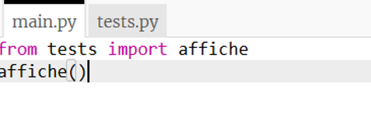
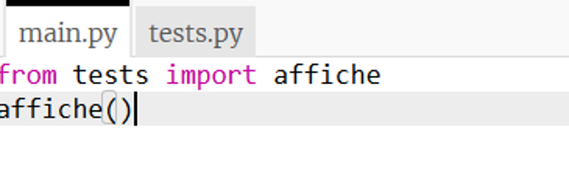
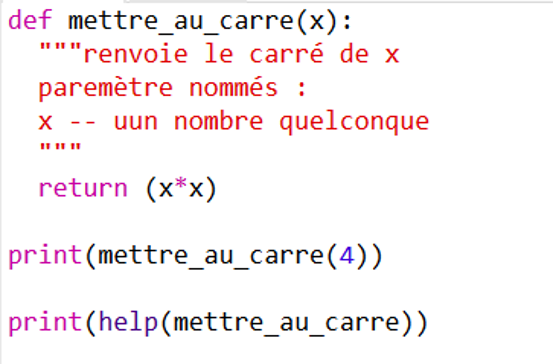

Fonctions et spécifications⚓︎
Créer une fonction⚓︎
Pour ne pas répéter plusieurs fois la même série de calculs dans un programme, on peut définir une fonction qui à chaque fois qu'on l'éxécutera, répètera les instrucions qu'elle contient.
Le prof d'EPS
Pour ne pas répéter plusieurs fois les consignes de courses, un prof d'EPS définit la fonction courir_sur(distance,eleve) distance pourra changer de valeur en fonction des élèves (100m, 200m ou 400m).
La fonction courir_sur(distance,eleve) consiste à :
- élève s'échauffe en trotinnant sur 3 tours de piste
- élève reprend son soufle et s'étire
- élève se rend sur la ligne de départ
- quand le starter retentit élève court le plus vite poussible sur distance
- élève vient annoncer son temps au professeur.
Une fois la fonction définie le prof n'a plus qu'à dire à certains élèves courir_sur(100m,Juliette) ou courir_sur(200m,Arthur) sans avoir à répéter les consignes.
La valeur de distace et le nom de l'élève sont appelés paramètre ou argumentde la fonction, et la valeur retournée (le temps) dépend à la fois du paramètre distance mais aussi de l'élève.
Attention
Si le professeur explique la fonction aux élèves mais que jamais il ne l'utilise, personne ne courra. Il faut appelerla fonction pour qu'elle s'éxécute.
Une fonction en informatique est une portion de code réalisant un tâche bien précise et qui pourra être utilisée une ou plusieurs fois dans la suite du programme.
Les fonctions informatiques acquièrent tout leur potentiel avec :
• une entrée, qui regroupe des variables qui servent de paramètres
• une sortie , qui est un résultat renvoyé par la fonction (et qui souvent dépendra des paramètres d’entrée).
En python pour définir une fonction on utilise le mot clé def suivi du nom de la fonction et des paramètres. Pour la valeur calculée on utilisera le mot clé return.
Exemple
1 2 3 | |
Cette fonction calcule le cube d’un nombre, par exemple calcule_cube(2) n’affiche rien mais envoie la valeur 8 .
Remarque: ce code "ne fait rien", il définit une fonction seulement... tant qu'elle n'est pas utilisée, rien ne se passe
Si on ajoute dans le code les lignes ci-desous, alors la fonction est utilisée et elle calcule le cube de 2 puis la somme 33+43`.
1 2 3 4 5 | |
De façon générale, la strucutre à respectée est celle-ci :

Et sous forme de code :
1 2 3 4 5 6 7 8 9 10 | |
Remarque
on peut exécuter la fonction avec un print(ma_fonction(2,3)) qui affichera le résultat mais ne le retiendra pas. Si on écrit simplement ma_fonction(2,3) la fonction sera exécutée mais le résultat ne sera pas affiché ni mémorisé.
Une fonction peut avoir plusieurs paramètres et renvoyer plusieurs résultats :
1 2 3 4 5 6 7 | |
Remarques
• Il peut y avoir plusieurs paramètres en entrée.
• Il peut y avoir plusieurs résultats en sortie.
• Très important! Il ne faut pas confondre afficher et renvoyer une valeur. L’affichage (par la commande print() ) affiche juste quelque chose à l’écran.
La plupart des fonctions n’affichent rien, mais renvoient une valeur (ou plusieurs).
C’est beaucoup plus utile car cette valeur peut être utilisée ailleurs dans le programme.
• Dès que le programme rencontre l’instruction return , la fonction s’arrête et renvoie le résultat. Il peut y avoir plusieurs fois l’instruction return dans une fonction mais une seule sera exécutée. On peut aussi ne pas mettre d’instruction return si la fonction ne renvoie rien.
Fonction sans valeur de retour et/ou sans arguments⚓︎
Une fonction qui ne renvoie pas de valeur est appelée procédure elle a une simple fonction d'affichage.
La fonction compteur() sans argument s'éxécutera toujours de la même façon.
Affichage de la valeur
Si on uilise l'instruction print(compteur()) le programme retournera None. En effet, l'instruction print pour une fonction a pour effet d'afficher la valeur retournée par l'instruction return, or ici il n'y en a pas.
Portée d'une variable⚓︎
Une variable est appelée locale lorsqu'elle n'est utilisée que dans la fonction. Le programme principal ne reconnait pas la variable. Si elle est définie dans tout le programme elle est appelée variable globale.
1 2 3 4 5 6 7 | |

La variable cube est définie DANS la fonction et n'est donc pas reconnu par le programme principal. v est définie dans le programme principale, elle sera reconnue partout, c'est une variable globale.
Attention aux confusions
1 2 3 4 5 6 | |
a=12 est une variable locale valable que dans la fonction.
ATTENTION : Ne pas nommer de la même façon deux variables!
Structurer son script⚓︎
 Le programme commence à être long, il faut ranger:
Le programme commence à être long, il faut ranger:
On définit le format de codage du texte :
1 2 | |
Importer les fonctions de modules externes
1 | |
Définition de vos fonctions
1 2 | |
Le code est TRES long?!
On utilise plusieurs fichiers et on les importe comme une bibliothèque normale
 

Plusieurs possibilités d’import dans main :
1 2 3 4 5 6 7 8 | |
Conventions⚓︎
nom_de_ma_fonction: pour les fonctions, variables et méthodes tout en minuscule avec _ pour séparer les mots.
MaClasse: pour le nom des classes (en terminale). Majuscule pour chaque nouveau mot et mots collés.
Les constantes sont entièrement en majuscule: NOM_DE_MA_CONSTANTE. Une constante est une variable à laquelle on donne une valeur qui ne changera pas dans tout le programme.
Documenter une fonction⚓︎
Le docstring se place juste après la création de la fonction par def. Il commence et termine par trois guillemets ".
Le docstring doit contenir :
- La descripton et le rôle de la fonction
- les paramètres passés en arguments (type et rôle)
- le type de ce qui est retourné
Ce docstring, peut être lu en tapant:
help(nom_de_ma_fonction)
Ou
nom_de_ma_fonction.__doc__


Très utile lorsque le code est réutilisé ensuite par quelqu’un d’autre.
Tester une fonction⚓︎
Tests unitaires⚓︎
Ils permettent de savoir si une fonction est correctement implémentée. On vérifie notamment les valeurs limites, les cas particuliers et les erreurs.
On les place dans la docstring.
Créer des tests unitaires :

En cas d’erreur (un test n’est pas exécuté correctement).
On modifie le code précédet en remplaçant le résultat de carré(2) par 3 au lieu de 4 pour générer une erreur.
Ici, un test sur 3 de la fonction carré ne renvoie pas ce qu’on attend:

Assertions⚓︎
On souhaite ici que la fonction calcule la somme de deux entiers et uniquement des entiers. Il va donc falloir vérifer que l'utilisateur en entrer des entiers :
1 2 3 4 5 6 | |
assert) permet de vérifier si une condition est respectée à un moment du code. Ici on vérifie que x et y sont des entiers avant de faire le calcul.
 Ici une erreur d'assertion est détectée puisque y est un flottant.
Ici une erreur d'assertion est détectée puisque y est un flottant.Avantage sur tests unitaires :
- Permet de placer des tests en cours de fonction et pas seulement sur le résultat
- Permet de donner un message différent selon l’erreur détectée
Par exemple, on demande son age à l'utilisateur. On s'attend à ce qu'il entre un nombre positif. On va donc tester si c'est un nombre et s'il est positifi avec des messages d'erreur adaptés.
1 2 3 4 5 6 7 8 9 10 11 12 13 14 15 16 17 | |
Tester des entrées sans sortir du programme
Tant que l'age entré ne sera pas un entier positif, le programme continue de proposer d'entrer une valeur.
1 2 3 4 5 6 7 8 9 10 11 12 13 14 | |